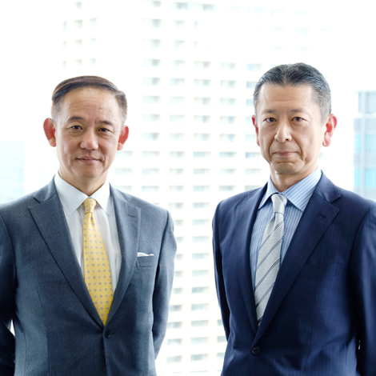

NRIのデジタルビジネス戦略
NRIでは、企業の DX に向けた取り組みについて、既存ビジネスの業務プロセス変革に寄与する DX を「DX1.0」、
デジタルで新しいビジネスモデルそのものを生み出す DX を「DX2.0」と定義しています。
DX を実現するためには、業務プロセス変革やビジネスモデル創造、そして、それらを実現する IT を同時並行で、共
に議論しながら、かつ、スピーディーに実装できる戦略パートナーが必要です。NRI は、コンサルティングと IT ソリ
ューションの人材と機能を併せ持ち、お客さまと併走し、お客さまと仮説検証を繰り返しながらビジネスを創出する「コ
ンソリューション」の提供を強みとして、DX の実現を推進します。


デジタルが拓く近未来（NRIのDX）
（4.00 MB）
DXの取組み事例
-

-

- 
-

-

-

NRI JOURNAL
DXがもたらす未来（後編）～経済圏連携で新しい価値を創造する
DX
経営
2018/07/04
NRI JOURNAL
DX成功のカギは経営者の目線の高さ
経営
DX
2018/07/02
NRI JOURNAL
DXがもたらす未来（前編）～KDDIデジタルデザインの挑戦
DX
経営
ビジネスIT
2018/06/27
NRI PEOPLE
IT市場の先導役から、未来社会のナビゲーターへ
経営
DX
桑津 浩太郎
NRI PEOPLE
デジタル変革への挑戦―― 不確実な環境下で、新しい事業の種を発掘し育てる
経営
DX
2018/04/25
NRI JOURNAL
「情報銀行」は消費者に受け入れられるか？
デジタルマーケティング
イノベーション
DX
2018/04/18
お知らせ
「どこかにマイル」が「広告業界の若手が選ぶ、コミュニケーション大賞 -Innovative Communication Award
(ICA)-優秀賞」を受賞
DX
2018/04/16
ビジネスモデルの特徴
人材が支えるNRI
NRIの強み
NRIのあゆみと持続的な成長
問題発見から問題解決まで
強固な顧客基盤
ビジネスモデルの特徴
人材が支えるNRI
業界トップクラスの収益力
企業情報
経営方針
社長メッセージ
企業理念
経営ビジョン
品質向上・リスク管理
人材の育成
内部統制
NRIグループ企業行動原則
NRIグループビジネス行動基準
コーポレート・ガバナンス
事業等のリスク
NRIグループの調達方針
NRIの強み
NRIのあゆみと持続的な成長
問題発見から問題解決まで
強固な顧客基盤
ビジネスモデルの特徴
NRIのデジタルビジネス戦略
人材が支えるNRI
業界トップクラスの収益力
企業案内
会社概要
沿革
役員構成
組織図
未来創発の軌跡
国内・海外拠点
メインオフィス
グループカンパニー
その他の関連会社・団体
前のページに戻る